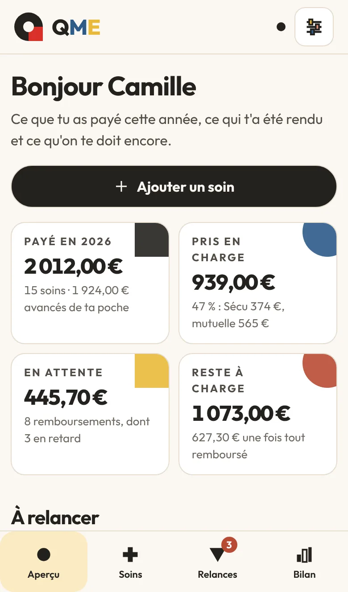
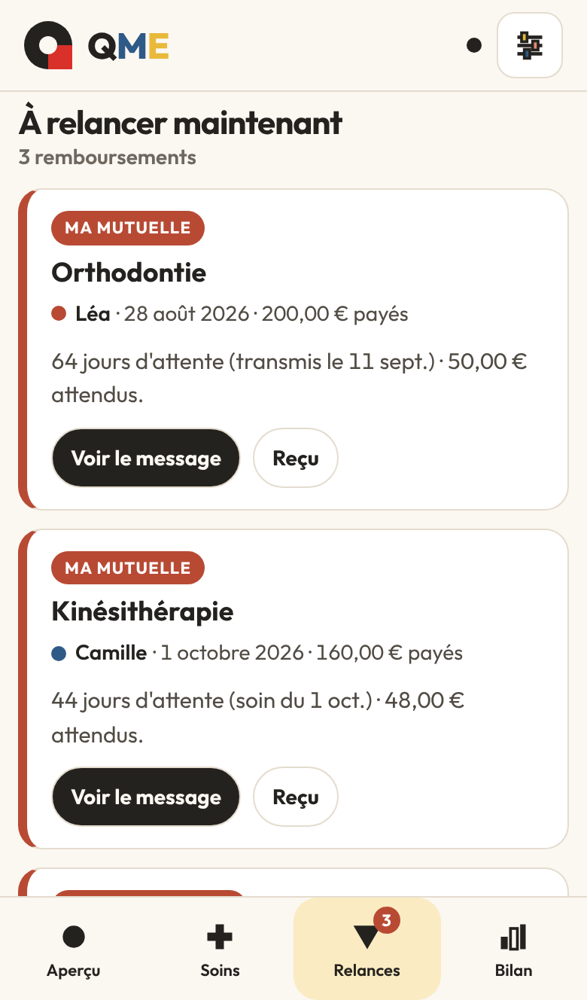

Frais de santé
Lunettes, dentiste, kiné : ce qu'on vous doit encore.
Faites glisser
Le problème
Deux organismes, des délais différents, des décomptes à lire : un remboursement qui n'arrive pas passe inaperçu. Ce qu'il faut, c'est une liste de ce qu'on attend.
Ce que fait le template

Données fictives
La vue clé

Données fictives